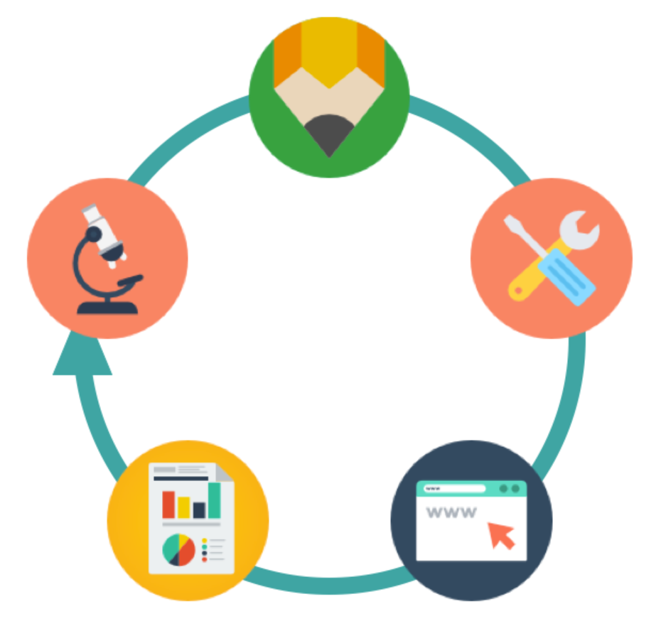

Mes compétences
Mon parcours m'a permis de développer des compétences variées, à la fois en pédagogie, développement web et utilisation d'outils numériques.

Ingénierie pédagogique
- Conception et animation de parcours de formation
- Création de supports pédagogiques multimédias
- Suivi des apprenants et coordination des intervenants
- Accompagnement pédagogique individualisé

Développement Web
- HTML5 / CSS3
- JavaScript
- Responsive design
Outils numériques
- Word / Excel
- Canva
- Didask
- Articulate
- Moodle / H5P
- IA (ChatGPT / Mistral / Whisk)